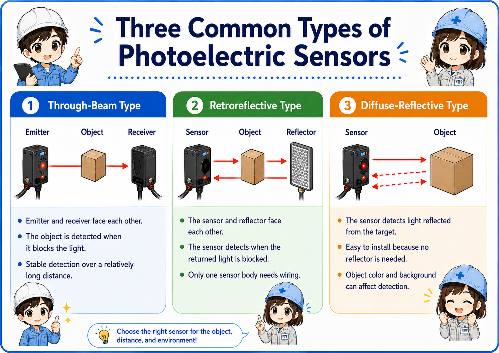
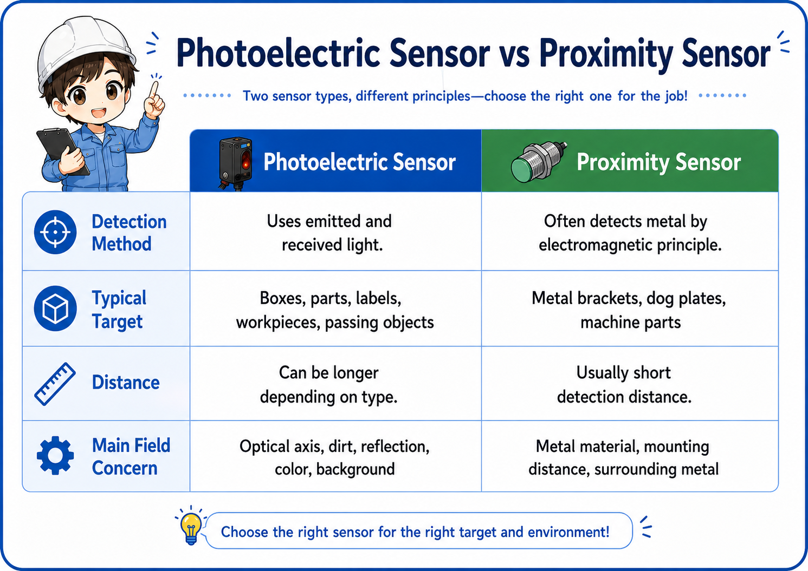
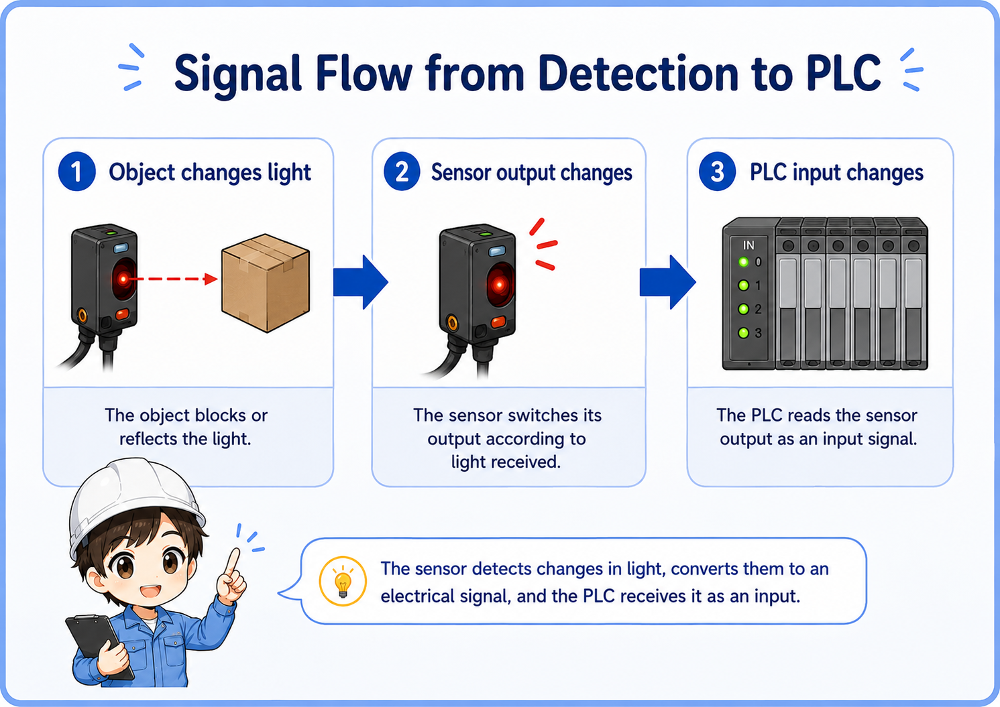
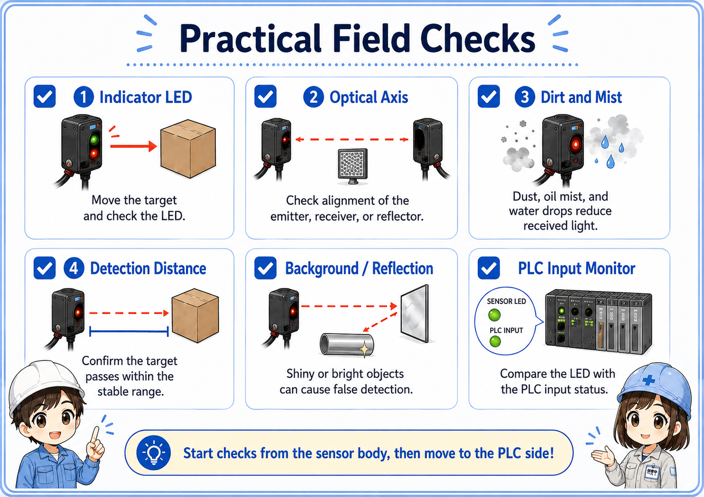

What is a photoelectric sensor?
A photoelectric sensor detects an object by sending light and checking whether the light is blocked, reflected, or returned.
In electrical control, a photoelectric sensor is often used when you want to detect a workpiece, box, part, pallet, or passing object without touching it. The sensor emits light from the emitter side and judges the state by the received light.
The important point is that a photoelectric sensor does not simply detect “metal.” It can detect many kinds of objects depending on the type, mounting distance, object surface, color, transparency, and surrounding light.


Think of a photoelectric sensor as a sensor that watches light. If the light path changes, the sensor output changes.

So it is not only about wiring. The physical position and the condition of the lens are also part of the check.
Three common types of photoelectric sensors
The same word “photoelectric sensor” can mean different detection methods. Start by identifying the type.
| Type | Basic idea | Strength | Watch out for |
|---|---|---|---|
| Through-beam | Emitter and receiver face each other. The object is detected when it blocks the light. | Stable detection over a relatively long distance. | Requires mounting space on both sides and careful optical axis alignment. |
| Retroreflective | The sensor and reflector face each other. The sensor detects when the returned light is blocked. | Only one sensor body needs wiring, so installation is simpler than through-beam. | Reflector position, dirt, and shiny objects can affect detection. |
| Diffuse-reflective | The sensor detects light reflected directly from the target object. | Easy to install because no receiver or reflector is needed. | Object color, surface, distance, and background can change detection stability. |
Through-beam
Use this when stable detection is important and you can mount both an emitter and receiver.
Retroreflective
Useful when you can mount a reflector on the opposite side but want wiring on only one side.
Diffuse-reflective
Convenient for simple detection, but the object surface and background must be checked carefully.
Do not judge by shape only
Always check the model, wiring diagram, and detection method. Similar-looking sensors can work differently.
Photoelectric sensor vs proximity sensor
A photoelectric sensor uses light. A proximity sensor, in many factory applications, detects metal or magnetic changes without using visible detection light.
A common beginner mistake is to treat every non-contact sensor the same. In practice, a photoelectric sensor and a proximity sensor are chosen for different reasons.
| Item | Photoelectric sensor | Proximity sensor |
|---|---|---|
| Detection method | Uses emitted and received light. | Often detects metal by electromagnetic principle. |
| Typical target | Boxes, parts, labels, workpieces, passing objects. | Metal brackets, dog plates, machine parts. |
| Distance | Can be longer depending on type. | Usually short detection distance. |
| Main field concern | Optical axis, dirt, reflection, color, background. | Metal material, mounting distance, surrounding metal. |

Simple selection rule
If you need to detect objects across a path or detect non-metal objects, consider a photoelectric sensor. If you need to detect a metal dog or machine position at short range, a proximity sensor may be simpler.
Signal and wiring basics
A photoelectric sensor is usually checked from two sides: the physical detection side and the electrical output side.
Even when the light detection is working, the PLC input may not turn on if the sensor output type, power supply, or wiring is wrong. Before changing the program, check the sensor LED, output wire, common wiring, and PLC input type.
1. Object changes light
The object blocks or reflects light depending on the sensor type.
2. Sensor output changes
The sensor switches its output according to light received.
3. PLC input changes
The PLC reads the sensor output as an input signal.
Check the output type
NPN/PNP, NO/NC, light-on/dark-on, and the PLC input common must match the actual wiring. A sensor can look normal at the body while the PLC input does not change.

Practical field checks before replacing the sensor
Many photoelectric sensor problems are caused by installation condition rather than a failed sensor body.
1. Indicator LED
Move the target by hand and confirm whether the sensor indicator changes at the expected timing.
2. Optical axis
For through-beam and retroreflective types, check whether the emitter, receiver, or reflector has shifted.
3. Dirt and mist
Dust, oil mist, water drops, and scratches on the lens or reflector can reduce received light.
4. Detection distance
Confirm that the target passes within the stable detection range, not just near the edge of detection.
5. Background and reflection
Shiny metal, transparent workpieces, and bright background surfaces can cause false detection.
6. PLC input monitor
Compare the sensor LED and the PLC input status. This separates optical problems from wiring/input problems.

Good troubleshooting order
First check the sensor LED at the sensor body. Then check the PLC input monitor. If the sensor LED changes but the PLC input does not, focus on wiring, common, input type, or output type.
Common trouble patterns
When photoelectric detection is unstable, write down whether the problem is “not detecting,” “always detecting,” or “sometimes misdetecting.”
| Symptom | Likely area | First check |
|---|---|---|
| Does not detect the object | Distance, optical axis, target color, lens dirt, wrong mode. | Move the target slowly and watch the sensor LED. |
| Always ON or always detecting | Mode setting, reflected background, wrong wiring, shorted output. | Remove the target and check whether the LED/output changes. |
| Detection is unstable | Vibration, marginal distance, dirty lens, shiny object, unstable power supply. | Clean the lens/reflector and recheck alignment and distance margin. |
| Sensor LED changes but PLC input does not | Wiring, NPN/PNP mismatch, PLC common, broken cable, input module. | Check voltage at the PLC input terminal and compare with the input monitor. |
Do not adjust randomly
If you change sensitivity, angle, or mode without recording the original state, the problem can become harder to reproduce. Take a photo of the original position and settings before adjustment.
When the sensor is unstable, avoid jumping straight to replacement. Confirm the detection LED, alignment, dirt, and PLC input in order.
I will separate the problem into optical detection and electrical signal before touching the program.
Summary
A photoelectric sensor detects objects by using light, and the correct type depends on the object, distance, mounting space, and environment. Through-beam, retroreflective, and diffuse-reflective sensors all have different strengths and weak points.
In the field, stable detection depends not only on wiring but also on optical axis alignment, lens and reflector condition, background reflection, and enough detection margin. Start from the sensor LED, then compare it with the PLC input monitor.
Final takeaway
If you can explain “what changes the light” and “how that signal reaches the PLC,” photoelectric sensor troubleshooting becomes much easier.
Related articles
Read these next to connect photoelectric sensors with PLC input signals and other sensor types.